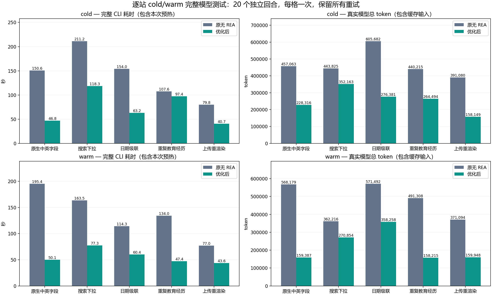

已记录 20/20 个独立模型回合；回执/台账/closeout 20/20；独立核验 20/20。20 个已返回 usage 的回合共 7,088,319 token，已完成回合记录 REA 1 次。全部完成并核验通过。
分组恢复为最初的 5 类网站 × cold/warm；左列现在是完整 CLI 耗时，右列是实际模型 usage，与早期脚本时长/交互文本计数的边界不同。
整批：原无 REA vs 优化后 · 整批：旧增强 vs 优化后 · 最初四图（脚本/交互文本）

| 网站 | 状态 | 原无 REA token | 优化后 token | token 变化 | 原无 REA 秒 | 优化后秒 | 时间变化 |
|---|---|---|---|---|---|---|---|
| 原生中英字段 | cold | 457,063 | 228,316 | 减少 50.0% | 150.58 | 46.82 | 减少 68.9% |
| 原生中英字段 | warm | 568,179 | 159,387 | 减少 71.9% | 195.38 | 50.08 | 减少 74.4% |
| 搜索下拉 | cold | 443,825 | 352,163 | 减少 20.7% | 211.22 | 118.32 | 减少 44.0% |
| 搜索下拉 | warm | 362,216 | 270,854 | 减少 25.2% | 163.48 | 77.34 | 减少 52.7% |
| 日期级联 | cold | 605,682 | 276,381 | 减少 54.4% | 154.01 | 63.16 | 减少 59.0% |
| 日期级联 | warm | 571,492 | 358,258 | 减少 37.3% | 114.26 | 60.36 | 减少 47.2% |
| 重复教育经历 | cold | 440,215 | 264,494 | 减少 39.9% | 107.64 | 97.43 | 减少 9.5% |
| 重复教育经历 | warm | 491,308 | 158,215 | 减少 67.8% | 134.04 | 47.44 | 减少 64.6% |
| 上传重渲染 | cold | 391,080 | 158,149 | 减少 59.6% | 79.84 | 40.72 | 减少 49.0% |
| 上传重渲染 | warm | 371,094 | 159,948 | 减少 56.9% | 76.97 | 43.62 | 减少 43.3% |
这是各状态五个独立模型回合的实测合计，不能与共享上下文的整批测试直接混用。
| 回合 | 状态 | 完整秒 | 预热秒 | 扣预热秒（派生） | 输入 | 其中缓存 | 未缓存输入 | 输出 | 其中推理 | 模型请求 | MCP 错误 | 业务失败返回 | REA 次数 | REA 秒 | 语义缓存消费 |
|---|---|---|---|---|---|---|---|---|---|---|---|---|---|---|---|
| native-bilingual-cold-baseline | 已核验 | 150.58 | 0.00 | 150.58 | 452,122 | 378,112 | 74,010 | 4,941 | 2,737 | 16 | 0 | 0 | 0 | 0 | False |
| native-bilingual-cold-optimized | 已核验 | 46.82 | 0.00 | 46.82 | 226,941 | 190,208 | 36,733 | 1,375 | 309 | 8 | 1 | 0 | 0 | 0 | False |
| native-bilingual-warm-optimized | 已核验 | 50.08 | 1.59 | 48.50 | 158,051 | 128,896 | 29,155 | 1,336 | 557 | 6 | 0 | 0 | 0 | 0 | True |
| native-bilingual-warm-baseline | 已核验 | 195.38 | 1.30 | 194.08 | 562,970 | 518,912 | 44,058 | 5,209 | 3,725 | 17 | 7 | 0 | 0 | 0 | False |
| search-dropdown-cold-optimized | 已核验 | 118.32 | 0.00 | 118.32 | 349,075 | 308,224 | 40,851 | 3,088 | 1,123 | 11 | 1 | 1 | 1 | 29.31 | False |
| search-dropdown-cold-baseline | 已核验 | 211.22 | 0.00 | 211.22 | 440,191 | 398,464 | 41,727 | 3,634 | 1,824 | 16 | 0 | 0 | 0 | 0 | False |
| search-dropdown-warm-baseline | 已核验 | 163.48 | 1.14 | 162.33 | 356,827 | 316,544 | 40,283 | 5,389 | 3,520 | 12 | 2 | 0 | 0 | 0 | False |
| search-dropdown-warm-optimized | 已核验 | 77.34 | 1.15 | 76.18 | 268,463 | 229,760 | 38,703 | 2,391 | 1,105 | 9 | 1 | 0 | 0 | 0 | True |
| date-cascade-cold-baseline | 已核验 | 154.01 | 0.00 | 154.01 | 600,626 | 553,344 | 47,282 | 5,056 | 2,962 | 19 | 2 | 0 | 0 | 0 | False |
| date-cascade-cold-optimized | 已核验 | 63.16 | 0.00 | 63.16 | 274,274 | 234,496 | 39,778 | 2,107 | 853 | 9 | 0 | 0 | 0 | 0 | False |
| date-cascade-warm-optimized | 已核验 | 60.36 | 0.72 | 59.65 | 355,805 | 313,472 | 42,333 | 2,453 | 863 | 11 | 0 | 1 | 0 | 0 | True |
| date-cascade-warm-baseline | 已核验 | 114.26 | 0.75 | 113.51 | 566,767 | 518,400 | 48,367 | 4,725 | 2,683 | 16 | 2 | 0 | 0 | 0 | False |
| repeated-education-cold-optimized | 已核验 | 97.43 | 0.00 | 97.43 | 262,348 | 231,936 | 30,412 | 2,146 | 762 | 9 | 2 | 0 | 0 | 0 | False |
| repeated-education-cold-baseline | 已核验 | 107.64 | 0.00 | 107.64 | 435,545 | 402,176 | 33,369 | 4,670 | 2,527 | 16 | 1 | 0 | 0 | 0 | False |
| repeated-education-warm-baseline | 已核验 | 134.04 | 1.07 | 132.97 | 485,323 | 398,976 | 86,347 | 5,985 | 3,617 | 17 | 2 | 0 | 0 | 0 | False |
| repeated-education-warm-optimized | 已核验 | 47.44 | 0.84 | 46.59 | 156,637 | 120,448 | 36,189 | 1,578 | 617 | 6 | 0 | 0 | 0 | 0 | True |
| upload-rerender-cold-baseline | 已核验 | 79.84 | 0.00 | 79.84 | 388,826 | 347,648 | 41,178 | 2,254 | 399 | 15 | 0 | 0 | 0 | 0 | False |
| upload-rerender-cold-optimized | 已核验 | 40.72 | 0.00 | 40.72 | 157,222 | 128,512 | 28,710 | 927 | 105 | 6 | 0 | 0 | 0 | 0 | False |
| upload-rerender-warm-optimized | 已核验 | 43.62 | 1.23 | 42.39 | 158,556 | 129,408 | 29,148 | 1,392 | 396 | 6 | 0 | 0 | 0 | 0 | True |
| upload-rerender-warm-baseline | 已核验 | 76.97 | 1.07 | 75.90 | 369,018 | 296,704 | 72,314 | 2,076 | 439 | 14 | 0 | 0 | 0 | 0 | False |
完整数值与逐请求 usage · 独立核验 · 20 格 CSV · 汇总 JSON · 运行环境 · 质量观察 · 评估文档